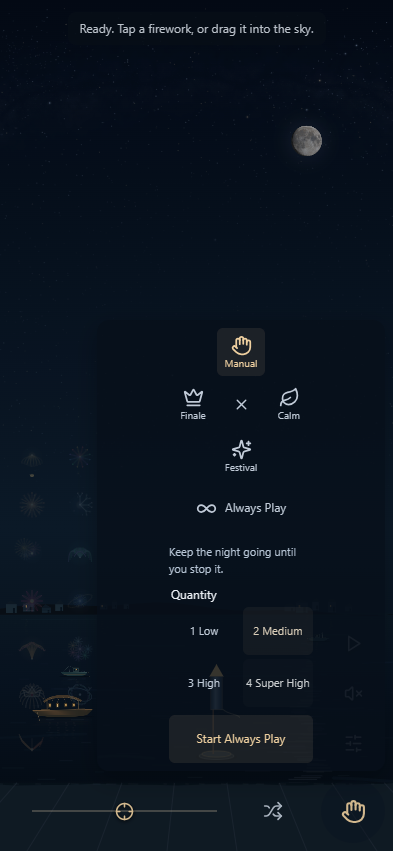

Build 2026-10-02.3; main 074c4c1; source fingerprint c9bb7291fd81d625331fcbc6746c92938906165feff69ae4156865aa41f989a8. Installed Chrome; seed 42; Standard quality; default reduced flashes. Real-time captures with the Shows dialog open. These illustrate controls; they are not matched-time water comparisons or performance evidence. Phone viewport is emulated.
